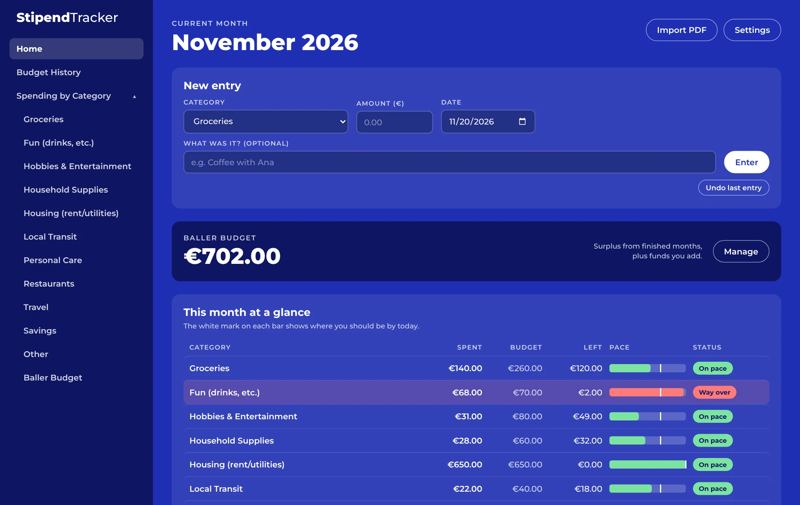
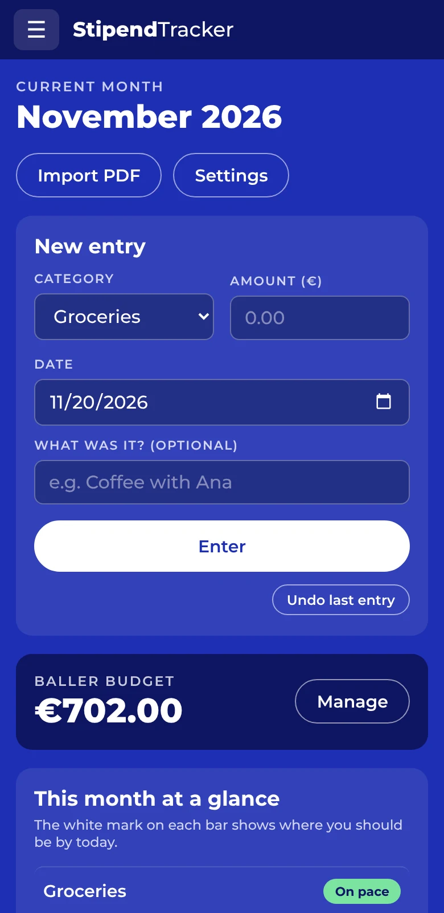
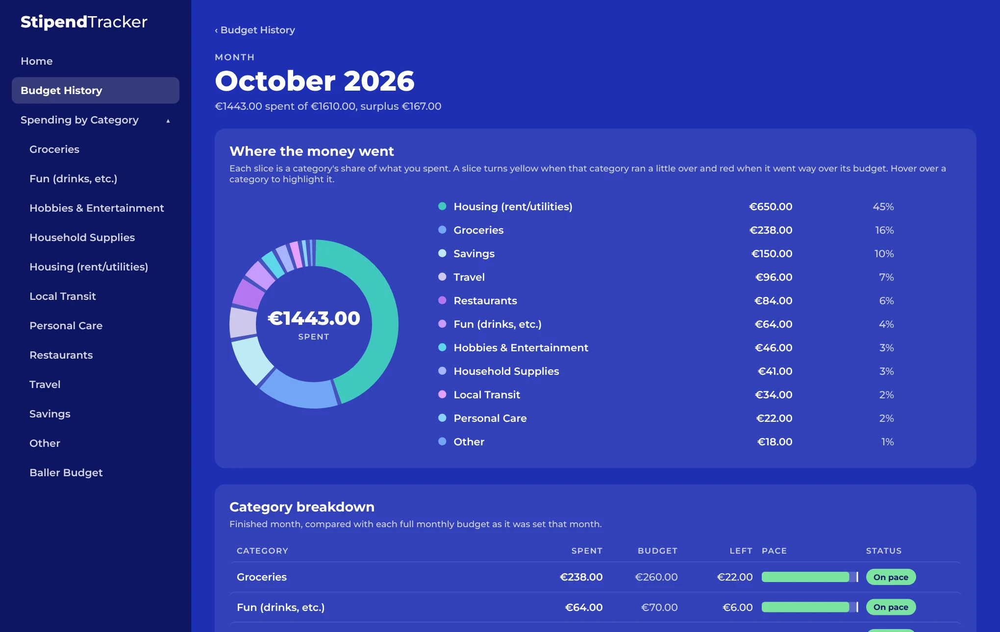

Pace tracking
Each category shows where you should be by today, not just what is left. Green, yellow and red tell you if you are on pace, a little high or way over, while there is still time to adjust.
StipendTracker is a simple budget tracker for stipend and fellowship recipients. See at a glance whether you are on pace, spend freely from your own savings buffer, and keep everything private on your own device.
Works on Mac, Windows, iPhone and Android. Install it right from the web app.


Built for people living on a fixed monthly amount, often in a new country, who want to know if they are okay without a spreadsheet.
Each category shows where you should be by today, not just what is left. Green, yellow and red tell you if you are on pace, a little high or way over, while there is still time to adjust.
Underspend in a month and the surplus rolls into a savings buffer you can spend guilt-free, plus any funds you add yourself.
Open any past month to see a sleek ring chart of where your money went. Categories that ran over are flagged in yellow and red.
No need to enter every little transaction one at a time. Drop in your Santander movements PDF, check the purchases, pick categories and import them in seconds. It remembers your stores and skips duplicates.
Paid in dollars but budgeting in euros? Tap € or $ next to the amount and StipendTracker converts it at that day's exchange rate, so every purchase counts toward your budget.
Every finished month keeps its own budgets and its own story. Click a month in your history and see the split at a glance.

There are no accounts, no servers and no tracking. Everything you enter stays on your own device, and you can save a backup file whenever you like.
Open the web app, set your monthly budgets and start tracking in about two minutes.